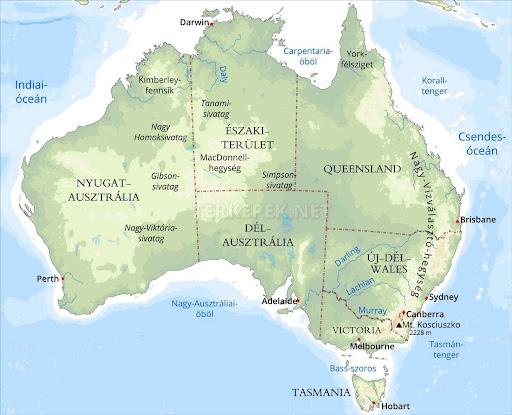

Ausztrália
Ausztrália hivatalos nevén az Ausztrál Államszövetség föderatív királyság, mely az ausztrál kontinenst, Tasmania szigetét és számos kisebb szigetet foglal magába. Északról Pápua Új-Guinea, Indonézia és Kelet-Timor; északkelet felől a Salamon-szigetek és Vanuatu; délkelet felől pedig Új-Zéland határolja tengeren. Fővárosa Canberra, és legnagyobb városa Melbourne. Földünk hatodik legnagyobb területű országa és az egyetlen olyan, amely egy egész kontinensre kiterjed, emellett Ausztrália és Óceánia legnagyobb országa is. Az Egyenlítőtől délre, a 10. és a 40. szélességi kör között található.

- Főváros: Canberra
- Legnagyobb város: Sydney
- Kontinens: Ausztrália
- Nyelv: angol
- Lakosság: kb. 26 millió
A kontinens 1606-os holland hajósok által történt felfedezését követően 1770-ben keleti felét az angolok követelték és elkezdték betelepíteni ide az elítélteket, hogy velük kolonizálják Új-Dél-Wales területét 1788.
Néhány látnivalók
Sydney Operaház
Sydney Operaház
Több látnivaló itt